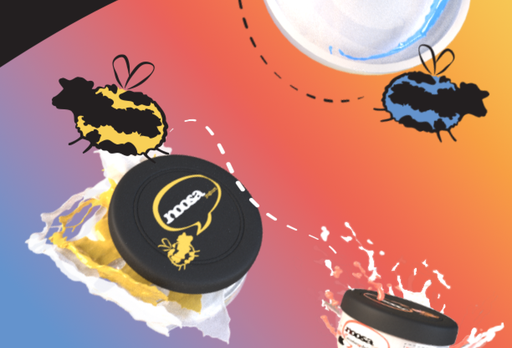
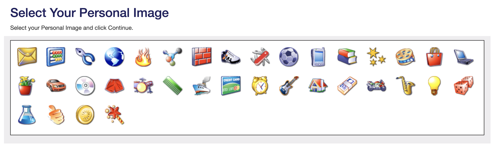

<!DOCTYPE html>
<html lang="en">
<head>
    <meta charset="UTF-8">
    <meta http-equiv="X-UA-Compatible" content="IE=edge">
    <meta name="viewport" content="width=device-width, initial-scale=1.0">
    <title>Portfolio - Home</title>
    <link rel="stylesheet" href="style.css">
    <link rel="shortcut icon" href="graph/fav.ico"/>
</head>
<body id="body" style="opacity: 0;">
    <div class="wlcm">
        <div class="accents">
            <div class="fillcircle"></div>
            <div class="fillcircle2"></div>
            <div class="holecircle"></div>
            <div class="holecircle2"></div>
            <div class="wobbleline"></div>
            <div class="wobbleline" style="left:40%; top:50%; transform: rotate(190deg);"></div>
        </div>
        <div class="accents2">
            
            
        </div>
        
        
    </div>
    
    
</body>

<div class="about" style="position: absolute; top:250%; width:99%; height: 100%; z-index: 1;">
    
    
    <br>
    
    
    <!-- <p class="abouttext" style="width: 45%; left: 45%; top:20%; position: absolute; text-align: center; font-size:x-large;">
        hello there! my name is ashley campbell, and i'm currently attending iupui. i hope to graduate in the class of 2024 as a computer graphics technology major. 
        <br>
        some of my interests include drawing, art history, cartoons, working with children, and education, among other things. strengths that i believe i hold and am able to bring to the table are creating, collaborating, emphasizing, empowering, and uplifting within my business and among my coworkers. overall, my core belief is that art should be an emotional outlet, and stories told through art should emphasize visual creativity in order to add to a unique story. 
        <br>
        careers that peak my interest the most are being an animator, 2d illustrator, and character + background designer. i feel like these jobs would let my creative output, unique art style, and intrigue in variety would help me produce more compelling and interesting art for different uses and stories.</p> -->
</div>

<div class="proj">
    <div class="accents">
            
            
            
            
            
            
    </div>
    <div class="noosa" style="background: rgba(255, 191, 0, .86)" style="cursor:pointer;" onClick="window.open('noosa.html','_self');">
        
        
    </div>
    

    <div class="paint" style="background: rgba(79, 102, 174, .86)" style="cursor:pointer;" onClick="window.open('paint.html','_self');">
        
        
    </div>
    

    <div class="web" style="background: rgba(255, 191, 0, .86)" style="cursor:pointer;" onClick="window.open('https://codepen.io/ashjcamp/pen/bGgmrdj');">
        
        
    </div>
    

</div>


      
    
    
    
    
<script>
window.onload = fadeIn;
  
  function fadeIn() {
      var fade = document.getElementById("body");
      var opacity = 0;
      var intervalID = setInterval(function() {

          if (opacity < 1) {
              opacity = opacity + 0.45
              fade.style.opacity = opacity;
          } else {
              clearInterval(intervalID);
          }
      }, 200);
  }
</script>
</html>